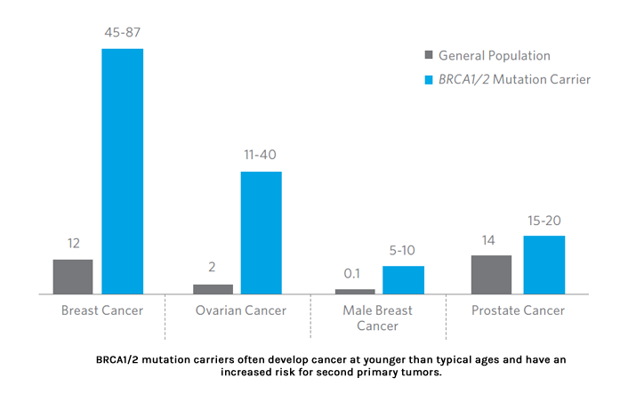

BREAST CANCER
New Solutions for Hereditary Breast Cancer
Identifying and understanding the genetic contribution to breast cancer allows for individualized disease management, and provides insight into personal and familial risks for cancer. For the portion of breast cancer that is due to inherited causes (up to 10%), modified treatment, surveillance, and risk-reducing options may be appropriate.
Comprehensive Hereditary Breast Cancer:
Premier Genomics offer comprehensive BRCA1/2 sequencing and deletion/duplication.
BRCA1 & BRCA2
Hereditary breast ovarian cancer (HBOC) syndrome is a cancer predisposition syndrome caused by germline (inherited) mutations in BRCA1 and BRCA2.
Mutations in these two highly penetrant genes increase the risk for cancers of the breast, ovaries, pancreas, and prostate.
Brca1/2 lifetime cancer risks (%)
Target Population for BRCA1/2 Testing
BRCA1/2 genetic testing is indicated for individuals with a personal and/or family history of any of the following:
1. Early-onset breast cancer (diagnosed < 45 years of age)
2. Triple negative (ER-/PR-/HER2/neu-) breast cancer diagnosed < 60 years of age
3. Ovarian, fallopian tube, or primary peritoneal cancer at any age
4. Bilateral or multiple primary breast cancers
5. Male breast cancer at any age
6. Ashkenazi Jewish descent with breast cancer at any age
7. Three or more cases of breast, ovarian, pancreatic, and/or high-grade prostate cancer at any age
8. Known BRCA1 or BRCA2 mutation in the family
Recommendations for Patients with a BRCA1/2 Mutation
WOMEN
Breast Cancer Management
Ovarian Cancer Management
MEN
Breast Cancer Management
Prostate Cancer Management
Recommendations for Patients with No Mutation Detected
For patients with a personal history of breast cancer, stage appropriate care and follow-up are recommended.
For patients with a family history of breast cancer (no personal history):
If there is a known BRCA1/2 mutation in the family and your patient tests negative, general breast screening is most likely appropriate. If there are other types of cancers in the family, other screening and prevention options may be appropriate specific to cancers in the family.
Frequently asked questions: